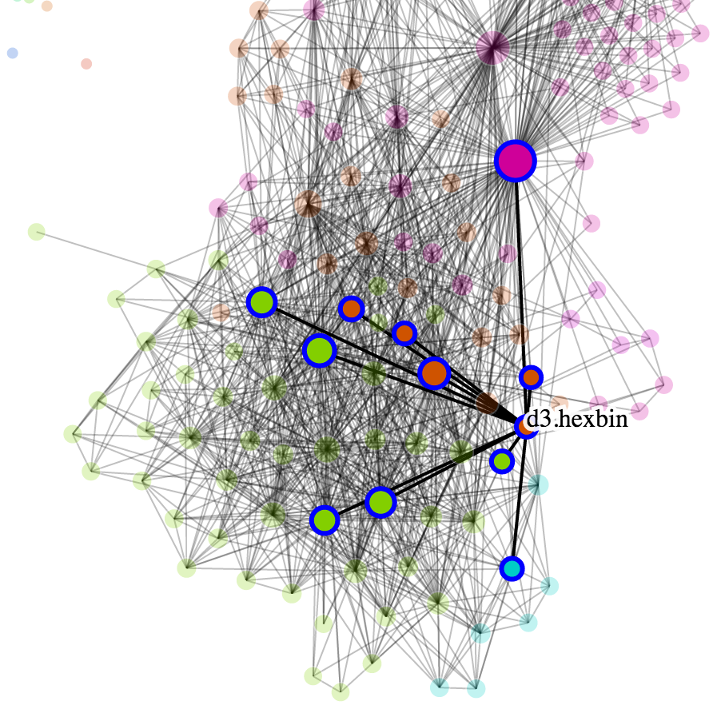

From the original site
This archived piece preserves its original text and historical context.
D3 Introspect Community Analysis
Derived from the intro texts of the Bay Area D3 Meetup Group as well as the connections between blocks revealed in Bl.ocksplorer, this small project shows how different D3 blocks cluster, as well as how people interested in D3 self-identify.

What went right
It uses a topic modeling viewer that I've built and rebuilt a half-dozen times, that quickly and easily shows topics and sample documents that those topics were drawn from. The networks rely on a mixed rendering network technique that I went on to detail in Chapter 11 of my book (tl;dr: use canvas to draw the edges). You see really interesting clusters in the networks, like the Island of Geography, and the Island of TopoJSON, and blocks that were popular for reuse.
What went wrong
Oh, the UI is terrible. If I weren't standing in front of it, presenting it to an audience, and explaining everything, then you're in for a bad time. It's also much slower than I would tolerate, especially the topic model viewer.
The next version would have
Integrate bl.ocksplorer and bl.ocks.org to make it into a social network for data visualization folks.